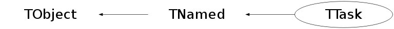

class TTask: public TNamed
TTask is a base class that can be used to build a complex tree of Tasks. Each TTask derived class may contain other TTasks that can be executed recursively, such that a complex program can be dynamically built and executed by invoking the services of the top level Task or one of its subtasks. Use the TTask::Add function to add a subtask to an existing TTask. To execute a TTask, one calls the ExecuteTask function. ExecuteTask will call recursively: - the TTask::Exec function of the derived class - TTask::ExecuteTasks to execute for each task the list of its subtasks. If the top level task (see example below) is added to the list of Root browsable objects, the tree of tasks can be visualized by the Root browser. The browser can be used to start a task, set break points at the beginning of a task or when the task has completed. At a breakpoint, data structures generated by the execution up this point may be inspected asyncronously and then the execution can be resumed by selecting the "Continue" function of a task. A Task may be active or inactive (controlled by TTask::SetActive). When a task is not active, its sub tasks are not executed. A TTask tree may be made persistent, saving the status of all the tasks. The picture in the Root browser below has been generated by executing the following script: { //------------------script tasks.C--------------------------- TTask *aliroot = new TTask("aliroot","ALICE reconstruction main task"); TTask *geominit = new TTask("geomInit","Initialize ALICE geometry"); TTask *matinit = new TTask("matInit","Initialize ALICE materials"); TTask *physinit = new TTask("physInit","Initialize Physics processes"); TTask *tracker = new TTask("tracker","Track reconstruction manager"); TTask *tpcrec = new TTask("tpcrec","TPC reconstruction"); TTask *itsrec = new TTask("itsrec","ITS reconstruction"); TTask *muonrec = new TTask("muonRec","Muon Reconstruction"); TTask *phosrec = new TTask("phosRec","Phos Reconstruction"); TTask *richrec = new TTask("richRec","Rich Reconstruction"); TTask *trdrec = new TTask("trdRec","TRD Reconstruction"); TTask *globrec = new TTask("globRec","Global Track Reconstruction"); TTask *pstats = new TTask("printStats","Print Run Statistics"); TTask *run = new TTask("run","Process one run"); TTask *event = new TTask("event","Process one event"); aliroot->Add(geominit); aliroot->Add(matinit); aliroot->Add(physinit); aliroot->Add(run); run->Add(event); event->Add(tracker); event->Add(muonrec); event->Add(phosrec); event->Add(richrec); event->Add(trdrec); event->Add(globrec); tracker->Add(tpcrec); tracker->Add(itsrec); run->Add(pstats); gROOT->GetListOfBrowsables()->Add(aliroot,"aliroot"); new TBrowser; } //-------------------------------------------------------------/*
 */
*/
Function Members (Methods)
public:
| TTask() | |
| TTask(const TTask& task) | |
| TTask(const char* name, const char* title) | |
| virtual | ~TTask() |
| virtual void | Abort()MENU |
| void | TObject::AbstractMethod(const char* method) const |
| virtual void | Add(TTask* task) |
| virtual void | TObject::AppendPad(Option_t* option = "") |
| virtual void | Browse(TBrowser* b) |
| static TClass* | Class() |
| virtual const char* | TObject::ClassName() const |
| virtual void | CleanTasks() |
| virtual void | Clear(Option_t* option = "") |
| virtual TObject* | TNamed::Clone(const char* newname = "") const |
| virtual Int_t | TNamed::Compare(const TObject* obj) const |
| virtual void | Continue()MENU |
| virtual void | TNamed::Copy(TObject& named) const |
| virtual void | TObject::Delete(Option_t* option = "")MENU |
| virtual Int_t | TObject::DistancetoPrimitive(Int_t px, Int_t py) |
| virtual void | TObject::Draw(Option_t* option = "") |
| virtual void | TObject::DrawClass() constMENU |
| virtual TObject* | TObject::DrawClone(Option_t* option = "") constMENU |
| virtual void | TObject::Dump() constMENU |
| virtual void | TObject::Error(const char* method, const char* msgfmt) const |
| virtual void | Exec(Option_t* option) |
| virtual void | TObject::Execute(const char* method, const char* params, Int_t* error = 0) |
| virtual void | TObject::Execute(TMethod* method, TObjArray* params, Int_t* error = 0) |
| virtual void | TObject::ExecuteEvent(Int_t event, Int_t px, Int_t py) |
| virtual void | ExecuteTask(Option_t* option = "0")MENU |
| virtual void | ExecuteTasks(Option_t* option) |
| virtual void | TObject::Fatal(const char* method, const char* msgfmt) const |
| virtual void | TNamed::FillBuffer(char*& buffer) |
| virtual TObject* | TObject::FindObject(const char* name) const |
| virtual TObject* | TObject::FindObject(const TObject* obj) const |
| Int_t | GetBreakin() const |
| Int_t | GetBreakout() const |
| virtual Option_t* | TObject::GetDrawOption() const |
| static Long_t | TObject::GetDtorOnly() |
| virtual const char* | TObject::GetIconName() const |
| TList* | GetListOfTasks() const |
| virtual const char* | TNamed::GetName() const |
| virtual char* | TObject::GetObjectInfo(Int_t px, Int_t py) const |
| static Bool_t | TObject::GetObjectStat() |
| virtual Option_t* | TObject::GetOption() const |
| virtual const char* | TNamed::GetTitle() const |
| virtual UInt_t | TObject::GetUniqueID() const |
| virtual Bool_t | TObject::HandleTimer(TTimer* timer) |
| virtual ULong_t | TNamed::Hash() const |
| virtual void | TObject::Info(const char* method, const char* msgfmt) const |
| virtual Bool_t | TObject::InheritsFrom(const char* classname) const |
| virtual Bool_t | TObject::InheritsFrom(const TClass* cl) const |
| virtual void | TObject::Inspect() constMENU |
| void | TObject::InvertBit(UInt_t f) |
| virtual TClass* | IsA() const |
| Bool_t | IsActive() const |
| virtual Bool_t | TObject::IsEqual(const TObject* obj) const |
| virtual Bool_t | IsFolder() const |
| Bool_t | TObject::IsOnHeap() const |
| virtual Bool_t | TNamed::IsSortable() const |
| Bool_t | TObject::IsZombie() const |
| virtual void | ls(Option_t* option = "*") constMENU |
| void | TObject::MayNotUse(const char* method) const |
| virtual Bool_t | TObject::Notify() |
| void | TObject::Obsolete(const char* method, const char* asOfVers, const char* removedFromVers) const |
| static void | TObject::operator delete(void* ptr) |
| static void | TObject::operator delete(void* ptr, void* vp) |
| static void | TObject::operator delete[](void* ptr) |
| static void | TObject::operator delete[](void* ptr, void* vp) |
| void* | TObject::operator new(size_t sz) |
| void* | TObject::operator new(size_t sz, void* vp) |
| void* | TObject::operator new[](size_t sz) |
| void* | TObject::operator new[](size_t sz, void* vp) |
| TTask& | operator=(const TTask& tt) |
| virtual void | TObject::Paint(Option_t* option = "") |
| virtual void | TObject::Pop() |
| virtual void | TNamed::Print(Option_t* option = "") const |
| virtual Int_t | TObject::Read(const char* name) |
| virtual void | TObject::RecursiveRemove(TObject* obj) |
| void | TObject::ResetBit(UInt_t f) |
| virtual void | TObject::SaveAs(const char* filename = "", Option_t* option = "") constMENU |
| virtual void | TObject::SavePrimitive(ostream& out, Option_t* option = "") |
| void | SetActive(Bool_t active = kTRUE)TOGGLE |
| void | TObject::SetBit(UInt_t f) |
| void | TObject::SetBit(UInt_t f, Bool_t set) |
| void | SetBreakin(Int_t breakin = 1)TOGGLE |
| void | SetBreakout(Int_t breakout = 1)TOGGLE |
| virtual void | TObject::SetDrawOption(Option_t* option = "")MENU |
| static void | TObject::SetDtorOnly(void* obj) |
| virtual void | TNamed::SetName(const char* name)MENU |
| virtual void | TNamed::SetNameTitle(const char* name, const char* title) |
| static void | TObject::SetObjectStat(Bool_t stat) |
| virtual void | TNamed::SetTitle(const char* title = "")MENU |
| virtual void | TObject::SetUniqueID(UInt_t uid) |
| virtual void | ShowMembers(TMemberInspector& insp) |
| virtual Int_t | TNamed::Sizeof() const |
| virtual void | Streamer(TBuffer& b) |
| void | StreamerNVirtual(TBuffer& b) |
| virtual void | TObject::SysError(const char* method, const char* msgfmt) const |
| Bool_t | TObject::TestBit(UInt_t f) const |
| Int_t | TObject::TestBits(UInt_t f) const |
| virtual void | TObject::UseCurrentStyle() |
| virtual void | TObject::Warning(const char* method, const char* msgfmt) const |
| virtual Int_t | TObject::Write(const char* name = 0, Int_t option = 0, Int_t bufsize = 0) |
| virtual Int_t | TObject::Write(const char* name = 0, Int_t option = 0, Int_t bufsize = 0) const |
protected:
| virtual void | TObject::DoError(int level, const char* location, const char* fmt, va_list va) const |
| void | TObject::MakeZombie() |
Data Members
public:
| enum TObject::EStatusBits { | kCanDelete | |
| kMustCleanup | ||
| kObjInCanvas | ||
| kIsReferenced | ||
| kHasUUID | ||
| kCannotPick | ||
| kNoContextMenu | ||
| kInvalidObject | ||
| }; | ||
| enum TObject::[unnamed] { | kIsOnHeap | |
| kNotDeleted | ||
| kZombie | ||
| kBitMask | ||
| kSingleKey | ||
| kOverwrite | ||
| kWriteDelete | ||
| }; |
protected:
| Bool_t | fActive | true if task is active |
| Int_t | fBreakin | =1 if a break point set at task extry |
| Int_t | fBreakout | =1 if a break point set at task exit |
| Bool_t | fHasExecuted | True if task has executed |
| TString | TNamed::fName | object identifier |
| TString | fOption | Option specified in ExecuteTask |
| TList* | fTasks | List of Tasks |
| TString | TNamed::fTitle | object title |
| static TTask* | fgBeginTask | pointer to task initiator |
| static TTask* | fgBreakPoint | pointer to current break point |
Class Charts
{kind=link}
{kind=link}
{kind=link}
{kind=link}

Function documentation
void Abort()
Abort current tree of tasks. After this call, the tree of tasks is ready to be executed again. The application must take care of cleaning data structures created by previous executions.
void Browse(TBrowser* b)
Browse the list of tasks. It is recommended to add the top level task to the list of ROOT browsables by: gROOT->GetListOfBrowsables()->Add(myTopLevelTask)
void CleanTasks()
Reset tasks state: breakpoints and execute flags also invokes the Clear function of each task to clear all data structures created by a previous execution of a task.
void Clear(Option_t* option = "")
Recursively call the Clear function of this task and its subtasks. The Clear function must be implemented for each derived class to clear all data structures created by a previous execution of a task. This function is automatically called by the CleanTasks function.
void ExecuteTask(Option_t* option = "0")
Execute main task and its subtasks. When calling this function, the Exec function of the corresponding class is invoked, then the list of its subtasks is executed calling recursively all the subtasks, etc. The option parameter may be used to select different execution steps within a task. This parameter is passed also to all the subtasks.
void ls(Option_t* option = "*") const
List the tree of tasks. Indentation is used to identify the task tree.